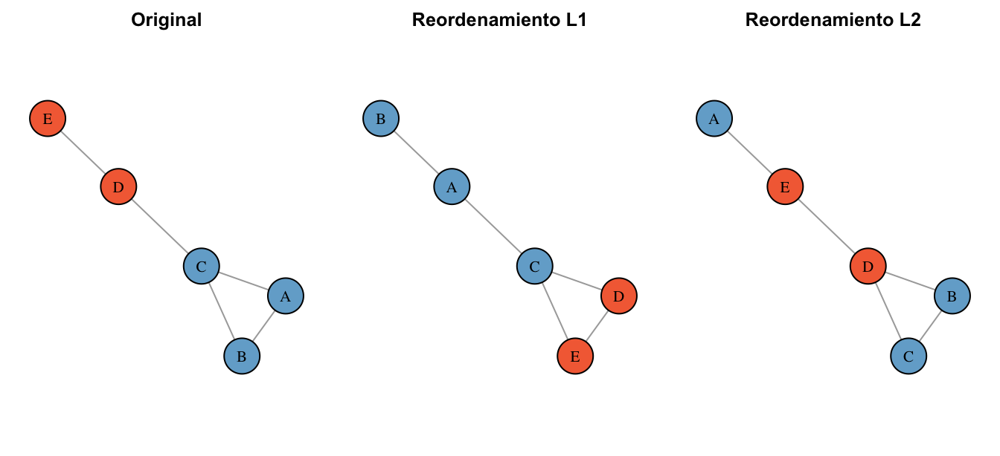
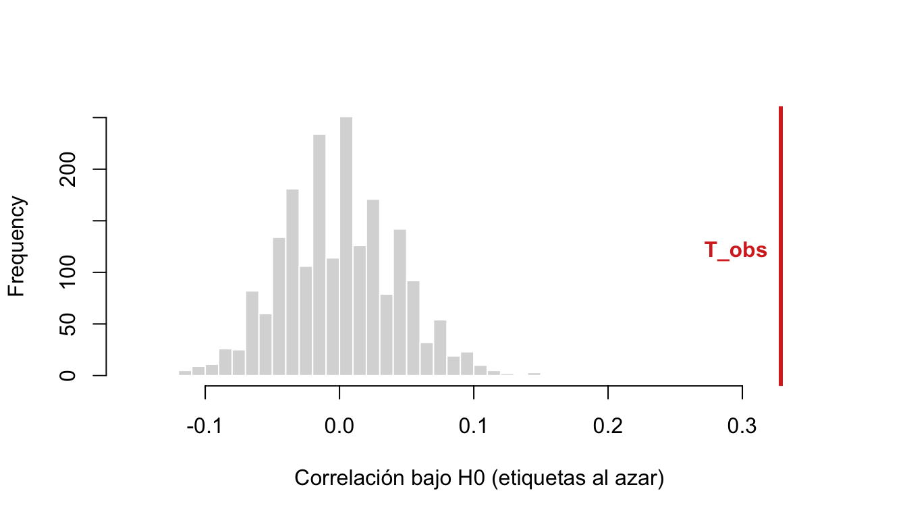
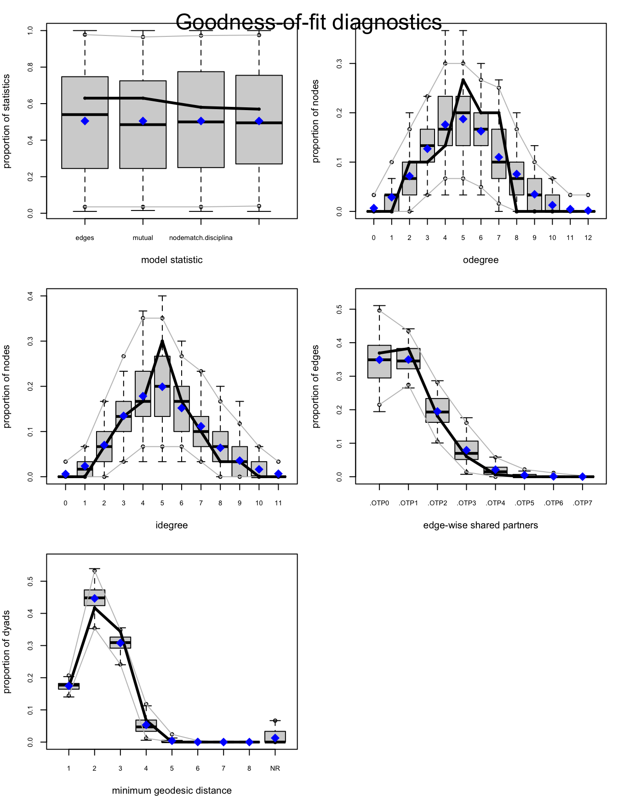

¿Por qué observamos estos vínculos y no otros? Eso es inferir. Usaremos dos herramientas: QAP testea si dos estructuras están asociadas; ERGM explica qué mecanismos hacen probable la red que vemos.
El primer día un agente de IA leyó encuesta_nominaciones.xlsx y ajustó “un ERGM bien especificado” incluso cuando no entendíamos qué era el ERGM. Hoy entenderemos el mismo modelo, pero esta vez línea por línea, entendiendo cada decisión, y así defender el modelo.
4.1 Preparación de datos
library(readxl) # leer el Excellibrary(igraph) # construir y visualizar la redenc <-read_excel("datos/encuesta_nominaciones.xlsx")head(enc, 3)
Cada fila es un ego con sus atributos (sexo, edad, disciplina) y hasta 7 personas nominadas usando el generador de nombres “¿con quién discutes temas importantes?”.
Convertimos las nominaciones en una lista de aristas dirigidas y construimos la red:
A simple vista los colores se agrupan: pareciera que la gente nomina dentro de su disciplina. Eso es una descripción. La pregunta inferencial es: ¿podría ese patrón surgir por azar?
Quieres saber si dos matrices sobre los mismos actores están asociadas: la de vínculos \(A\) (“¿quién con quién?”) y una de similitud \(S\) (“¿comparten disciplina?”). Calculas la correlación entre sus celdas y te da, digamos, 0.4. ¿Es mucho? El camino convencional (tratar cada díada como observación independiente y sacar un p-value de regresión) está mal, porque las díadas \(Y_{ij}\) e \(Y_{ik}\) comparten al actor \(i\): si Amanda es sociable, todas sus díadas se parecen. Hay menos información independiente de la que el n sugiere.
A <-as_adjacency_matrix(red_i, sparse =FALSE) # ¿quién nominó a quién?S <-outer(V(red_i)$disciplina, V(red_i)$disciplina, "==") *1# ¿comparten disciplina?diag(S) <-0fuera_diag <-function(M) M[row(M) !=col(M)] # las 870 celdas fuera de la diagonalT_obs <-cor(fuera_diag(A), fuera_diag(S))T_obs
[1] 0.3286346
El problema es que, como las díadas \(Y_{ij}\) e \(Y_{ik}\) comparten al actor \(i\), entonces no son independientes. Hagámoslo igual, incluso sabiendo que este modelo está mal especificado:
naive <-glm(fuera_diag(A) ~fuera_diag(S), family = binomial)summary(naive)$coefficients
Estimate Std. Error z value Pr(>|z|)
(Intercept) -2.429026 0.1538013 -15.793279 3.461097e-56
fuera_diag(S) 1.770450 0.1959303 9.036122 1.623279e-19
En general \(Cov(Y_{ij}, Y_{ik}) \neq 0\), y un test que asume independencia exagera la cantidad de información disponible: los p-values salen más chicos de lo que corresponde.
opregunta 1
5.2 La idea central: barajar etiquetas, no celdas
Con QAP construimos el mundo nulo a mano, respetando la estructura de la red.
Usamos la misma red tres veces. Lo único que cambia es quién es quién: aplicamos dos reordenamientos de etiquetas, \(L_1\) y \(L_2\) (y con las etiquetas viajan los atributos):
g <-graph_from_literal(A - B, A - C, B - C, C - D, D - E)xy <-layout_with_fr(g)col <-c(A ="#74add1", B ="#74add1", C ="#74add1", D ="#f46d43", E ="#f46d43")L1 <-c(A ="D", B ="E", C ="C", D ="A", E ="B") # un reordenamientoL2 <-c(A ="B", B ="C", C ="D", D ="E", E ="A") # otro cualquierapar(mfrow =c(1, 3), mar =c(1, 1, 2, 1))plot(g, layout = xy, vertex.label =V(g)$name,vertex.color = col[V(g)$name], vertex.size =30,vertex.label.color ="black", main ="Original")plot(g, layout = xy, vertex.label = L1[V(g)$name],vertex.color = col[L1[V(g)$name]], vertex.size =30,vertex.label.color ="black", main ="Reordenamiento L1")plot(g, layout = xy, vertex.label = L2[V(g)$name],vertex.color = col[L2[V(g)$name]], vertex.size =30,vertex.label.color ="black", main ="Reordenamiento L2")

Figura 5.1: La misma estructura tres veces. L1 (A→D, B→E, C→C, D→A, E→B) y L2 (A→B, B→C, C→D, D→E, E→A) son solo reordenamientos: la topología se mantiene.
La permutación se aplica simultáneamente a filas y columnas de la matriz, porque renombrar personas = permutar fila y columna juntas; cualquier otra cosa rompería también la topología.
pregunta 2
5.3 QAP paso a paso
Las dos matrices (\(A\) = ¿quién nominó a quién?, \(S\) = ¿comparten disciplina?) ya las construimos arriba, cuando hicimos el modelo mal especificado. Ahora hagamos el test bien.
Correlación observada. Como la red es dirigida, usamos todas las celdas fuera de la diagonal (no solo el triángulo inferior):
T_obs <-cor(fuera_diag(A), fuera_diag(S))T_obs
[1] 0.3286346
Contruir el nulo. Repetimos el barajado de etiquetas 2.000 veces, recalculando la correlación en cada mundo permutado:
set.seed(2026)T_perm <-replicate(2000, { idx <-sample(nrow(S)) # una permutación de los 30 nodos S_perm <- S[idx, idx] # misma permutación en filas y columnascor(fuera_diag(A), fuera_diag(S_perm))})
hist(T_perm, breaks =40, col ="gray85", border ="white",xlim =range(c(T_perm, T_obs)) *1.1,main ="", xlab ="Correlación bajo H0 (etiquetas al azar)")abline(v = T_obs, col ="#d73027", lwd =3)text(T_obs, 120, "T_obs", pos =2, col ="#d73027", font =2)

Figura 5.2: La distribución nula de QAP y el valor observado. La pregunta completa del test está en esta figura: ¿T_obs cae donde los valores nulos son comunes, o donde son rarísimos?
El valor p empírico. Con la corrección de +1 para no reportar jamás un p de exactamente cero con permutaciones finitas (Phipson & Smyth, 2010):
En 2.000 mundos donde la disciplina se repartió al azar, ninguno alcanzó la asociación observada (el más extremo llegó apenas a ~0.16, la mitad de lo observado), así que la asociación entre “compartir disciplina” y “nominarse” es real.
pregunta 3
AdvertenciaQué NO dice este resultado
QAP estableció una asociación, no un mecanismo. El mismo patrón es compatible con al menos tres historias:
Selección — elijo a los parecidos.
Influencia — me parezco a quienes frecuento.
Causa común — algo externo produce el vínculo y la similitud (p. ej., compartir oficina).
NotaPara jugar
Reemplaza S por similitud de sexo. ¿La asociación sobrevive?
Prueba con similitud de edad: S_edad <- -abs(outer(V(red_i)$edad, V(red_i)$edad, "-")). ¿Por qué el signo negativo?
Baja las permutaciones a 100 y repite varias veces. ¿Por qué usar 1.000+?
6 ERGM → explicar la red
QAP responde si es que hay asociación. Ahora, ¿qué mecanismos, operando juntos, hacen probable esta red? ¿Cuánto pone la homofilia, cuánto la reciprocidad, cuánto el cierre triádico?
6.1 La idea: la red completa es la variable aleatoria
Un ERGM (Exponential-family Random Graph Model) trata la red entera como una realización entre todas las redes posibles de 30 nodos, y asigna mayor probabilidad a las redes que contienen las configuraciones favorecidas:
Vale la pena desarmarla pieza por pieza, porque cada símbolo corresponde a una decisión conceptual:
\(Y\) — la variable aleatoria es la red completa, no un lazo ni un nodo: la matriz de adyacencia entera. Y \(y\) es una realización: la red que efectivamente observamos. Esto es lo que distingue a un ERGM de una regresión común, donde cada fila sería una observación independiente.
\(g_H(y)\) — los estadísticos: cuentan cuántas veces aparece la configuración \(H\) en la red \(y\) (cuántas aristas, cuántas díadas recíprocas, cuántos pares de la misma disciplina conectados). Son el único lugar por donde el modelo mira la red: dos redes con los mismos estadísticos son, para el modelo, indistinguibles.
\(\theta_H\) — los parámetros: cuánto pesa cada configuración. Es lo que estimamos, y lo que interpretamos como log-odds.
\(\exp(\cdot)\) — la exponencial garantiza que toda red tenga probabilidad positiva y hace que el logaritmo de la probabilidad sea lineal en los parámetros — por eso los \(\theta\) se leen como en una regresión. No es una elección estética: es la única forma posible si uno pide “la distribución menos comprometida que reproduzca estos estadísticos”. (A quienes vengan de física: es exactamente la distribución de Boltzmann, con \(-\theta^{\mathsf{T}}s(y)\) jugando el papel de la energía.)
\(\kappa(\theta)\) — la constante de normalización: la suma de \(\exp(\theta^{\mathsf{T}} s(y'))\) sobre todas las redes posibles\(y'\). Es lo que convierte la expresión en una probabilidad que suma 1… y es el problema central de estimar estos modelos.
Nota¿Por qué \(\kappa(\theta)\) es intratable?
Con \(n\) nodos y red dirigida hay \(n(n-1)\) díadas, cada una encendida o apagada: \(2^{n(n-1)}\) redes posibles. Nuestra encuesta tiene 30 personas → 870 díadas → \(2^{870} \approx 10^{262}\) redes. Para dimensionarlo: el universo observable tiene del orden de \(10^{80}\) átomos.
Calcular \(\kappa\) sumando término a término es, literalmente, imposible. Por eso ergm::ergm()no la calcula: simula redes con MCMC y compara estadísticos, un procedimiento donde \(\kappa\) se cancela porque solo se necesitan cocientes de probabilidades. (Con redes diminutas —5 nodos dirigida, \(2^{20} \approx\) un millón de redes— sí se puede enumerar todo: ese es el truco de los ergmitos.)
Piénsenlo como una regresión de configuraciones,
red ~ edges + mutual + nodematch + gwesp
donde cada término es una hipótesis sobre la formación de vínculos, y cada coeficiente \(\theta\) dice si esa configuración aparece más o menos de lo esperable dado el resto del modelo. La interpretación operativa es vía change statistics: \(\theta\) es el cambio en el log-odds de un vínculo cuando agregarlo crea esa configuración.
Término
Pregunta que hace
Configuración
edges
¿qué tan costoso es formar un vínculo?
una arista (el “intercepto”)
mutual
¿se devuelven las nominaciones?
díada recíproca
nodematch("x")
¿se favorece conectar con los del mismo x?
homofilia
gwesp
¿se favorece cerrar triángulos?
cierre triádico
6.2 Preparar la red para ergm
El paquete ergm (del ecosistema statnet) usa objetos network, no igraph. El puente es intergraph::asNetwork(). De aquí en adelante escribimos ergm:: delante de cada función del paquete, para que siempre se vea de dónde viene lo que llamamos:
Advertenciaigraph y statnet no se llevan bien cargados a la vez
Ambos definen funciones con el mismo nombre (degree, betweenness, %v%…). Si mezclas, usa prefijos explícitos: igraph::degree(), sna::degree(). En un análisis largo, conviene hacer la parte descriptiva con igraph, convertir con asNetwork(), y de ahí en adelante quedarse en statnet.
¿Y ese número qué es? Exactamente el log-odds de la densidad. Comprobémoslo, calculando la densidad directamente con igraph:
igraph::edge_density(red_i) # la densidad, directo de igraph
[1] 0.1712644
y <-fuera_diag(A) # las 870 díadas dirigidas como 0/1c(ergm_edges =unname(coef(m0)),glm_logit =unname(coef(glm(y ~1, family = binomial))),logit_dens =qlogis(igraph::edge_density(red_i)))
Cuando el modelo solo tiene términos diádico-independientes, un ERGM es una regresión logística sobre las díadas.
¿Y cómo vuelve ese coeficiente a ser una probabilidad? El modelo vive en escala log-odds (logit). Con \(\rho\) = densidad de la red, la conversión exacta es:
Warning: 'glpk' selected as the solver, but package 'Rglpk' is not available;
falling back to 'lpSolveAPI'. This should be fine unless the sample size and/or
the number of parameters is very big.
summary(m1)$coefficients
Estimate Std. Error MCMC % z value Pr(>|z|)
edges -2.248495 0.1389853 0 -16.17793 7.218536e-59
mutual 2.398223 0.3096399 0 7.74520 9.543122e-15
mutual ≈ 2.4: si tú ya me nominaste, el log-odds de que yo te nomine sube en \(\hat\theta_{\text{mutual}} = 2.40\). La expresión exacta, comparando los dos escenarios:
\[
P(\text{te nomino} \mid \text{tú no me nominaste}) = \operatorname{plogis}(\hat\theta_{\text{edges}})
\]
\[
P(\text{te nomino} \mid \text{tú ya me nominaste}) = \operatorname{plogis}(\hat\theta_{\text{edges}} + \hat\theta_{\text{mutual}})
\]
La probabilidad de que te nomine aumenta de ~9% a ~54%. Y en odds, la nominación de vuelta multiplica por \(e^{2.40} \approx 11\). (Ojo: lo que se multiplica por 11 son los odds, no la probabilidad — por eso conviene reportar ambos.)
Nota que edgesbajó al agregar mutual: parte de la densidad que M0 atribuía al “costo basal” era, en realidad, reciprocidad.
pregunta 5
pregunta 6
6.5 M2 — + nodematch
QAP antes dijo “hay asociación entre disciplina y vínculos”, pero eso no estaba condicionado ni a lo comunes que son las nominaciones ni a la reciprocidad. Ahora agregamos nodematch("disciplina") y nodematch("sexo") para ver si la homofilia sobrevive controlando densidad y reciprocidad:
El ERGM ahora dice “la homofilia por disciplina sobrevive controlando densidad y reciprocidad, con tamaño 1.3 en log-odds”. La homofilia por sexo, en cambio, sale chica (≈ 0.33) y en el borde de la significación (en parte porque tenemos solo n = 30).
Y combinando términos salen los escenarios concretos, con la misma lógica plogis de M0 y M1:
De ~5% (dos desconocidos de disciplinas distintas) a ~50% (misma disciplina y la nominación de vuelta ya existe). Eso significan los coeficientes.
6.6 M3 — + gwesp
Para el cierre triádico no usamos el término triangle, sino gwesp (geometrically weighted edgewise shared partners): premia socios compartidos con retornos decrecientes — el primer amigo en común importa mucho; el décimo, casi nada.
Cuatro términos vecinos que conviene no confundir:
Transitividad — la medida descriptiva: qué fracción de los caminos de largo 2 están cerrados. Una foto de cuánto cierre hay (la calculamos en Fundamentos matemáticos).
Cierre triádico — el mecanismo hipotético: la tendencia de los caminos abiertos a cerrarse (“el amigo de mi amigo tiende a volverse mi amigo”).
gwesp — el estadístico de modelo que operacionaliza ese mecanismo en el ERGM; su \(\theta\) dice si el cierre está favorecido condicional al resto del modelo. Por eso puede haber transitividad alta con gwesp nulo — como veremos ahora mismo.
Balance estructural — primo, no hermano: vive en redes con signo (+/−: “el enemigo de mi enemigo es mi amigo”). Sin valencias no hay balance que evaluar; en redes como la nuestra lo correcto es hablar de cierre.
Usualmente, cuando alguien dice que hay que agregar un término de “triángulos” al ERGM”, se refiere a gwesp, no a triangle: este crece sin freno ya que cada triángulo nuevo hace más atractivo el siguiente, y el modelo degenera rápido. Es la falla clásica de los ERGM en redes medianas. gwesp amortigua ese contagio con pesos decrecientes.
El coeficiente de gwesp sale ≈ 0 y no significativo. En la figura inicial se ven triángulos por todos lados, pero una vez que el modelo controla la homofilia, vemos que los triángulos aparentes eran solo homofilia. Lo importante en este caso ficticio no era cerrar triadas en el sentido de “el amigo de mi amigo es mi amigo”, sino que tres personas eligieron parecido, cada una por su cuenta, basándose solamente en su profesión.
La densidad basal cae a medida que los mecanismos reales absorben lo suyo;
La reciprocidad y la homofilia disciplinar se mantienen firmes en cada peldaño;
El AIC mejora hasta M2 y empeora en M3 — agregar cierre no compra nada. El mejor modelo es el más simple que captura los mecanismos reales.
6.7.1 La fábrica, a la vista
Estos datos son ficticios, y el motor que los cró usó tres cosas: 1. nominaciones fuertemente sesgadas hacia la misma disciplina (peso 4 por compartir disciplina), 2. levemente sesgadas hacia el mismo sexo (peso 1.5 por compartir sexo), y 3. una dosis de reciprocidad (probabilidad de 0.35 de devolver cada nominación).
set.seed(2026)nombres <-c("Amanda Rojas","Bastian Soto","Carla Munoz","Diego Herrera","Elisa Fuentes","Felipe Castro","Gabriela Pinto","Hernan Vidal","Isidora Lagos","Javier Espinoza","Karin Morales","Lucas Paredes","Marcela Vergara","Nicolas Riquelme","Olivia Campos","Pablo Guzman","Rocio Salazar","Simon Tapia","Tamara Ibanez","Ulises Vega","Valentina Cruz","Walter Molina","Ximena Bravo","Yerko Sandoval","Zoe Martinez","Andres Leiva","Beatriz Navarro","Cristobal Pena","Daniela Oyarzun","Esteban Silva")n <-length(nombres)sexo <-sample(c("F","M"), n, replace =TRUE)edad <-sample(23:45, n, replace =TRUE)disciplina <-sample(c("ingenieria","sociologia","salud"), n,replace =TRUE, prob =c(.35, .35, .30))noms <-vector("list", n)for (i in1:n) { k <-sample(2:7, 1) # cuántos nomina cada ego w <-ifelse(disciplina == disciplina[i], 4, 1) *# <- homofilia FUERTEifelse(sexo == sexo[i], 1.5, 1) # <- homofilia LEVE w[i] <-0 noms[[i]] <-sample(nombres, k, prob = w)}for (i in1:n) for (a in noms[[i]]) { # <- reciprocidad: devolver con prob .35 j <-match(a, nombres)if (!(nombres[i] %in% noms[[j]]) &&length(noms[[j]]) <7&&runif(1) < .35) noms[[j]] <-c(noms[[j]], nombres[i])}nom_mat <-t(sapply(noms, function(x) { length(x) <-7; x }))colnames(nom_mat) <-paste0("nom_", 1:7)fabricada <-data.frame(nombre = nombres, sexo = sexo, edad = edad,disciplina = disciplina, nom_mat, stringsAsFactors =FALSE)all.equal(fabricada, as.data.frame(enc), check.attributes =FALSE)
[1] TRUE
Ese TRUE dice que lo que acabas de generar es, celda por celda, la misma encuesta que analizamos todo el capítulo. Y hay un bonus elegante: los coeficientes recuperados por el ERGM quedan notablemente cerca de los logaritmos de los pesos de fábrica:
Mecanismo
Perilla de fábrica
log del peso
Coef. ERGM (M3)
Homofilia por disciplina
peso 4
\(\ln 4 \approx 1.39\)
nodematch.disciplina ≈ 1.38
Homofilia por sexo
peso 1.5
\(\ln 1.5 \approx 0.41\)
nodematch.sexo ≈ 0.35
Reciprocidad
prob. de devolución 0.35
— (mecanismo distinto)
mutual ≈ 1.98
Cierre triádico
ninguna
—
gwesp ≈ −0.06 (n.s.)
No es una identidad matemática (la fabricación muestrea sin reemplazo, y la reciprocidad se inyecta con otra regla — por eso mutual no tiene un log de fábrica que comparar), pero muestra en qué sentido el ERGM “leyó” las perillas de la fábrica.
6.8 GOF — ¿El modelo fabrica redes creíbles?
Un ERGM bien estimado puede, igual, representar mal la red. Para eso vemos el GOF goodness of fit.
El procedimiento es simular redes desde el modelo y comparar propiedades que no estaban en la fórmula (distribución de grado, geodésicas, socios compartidos) contra las observadas:
set.seed(2026)gof_m2 <- ergm::gof(m2)par(mfrow =c(3, 2), mar =c(4, 4, 2, 1))plot(gof_m2)

Figura 6.1: Bondad de ajuste de M2: la línea negra (red observada) debe caminar dentro de las cajas (redes simuladas desde el modelo).
Si la línea observada se escapa sistemáticamente de las cajas en algún panel, el modelo está ciego a algo — y ese panel te dice qué término considerar.
6.9 GOF como detector de términos ausentes
¿De verdad el GOF señala qué falta? Hagamos el experimento completo. Fabriquemos una red que carece a propósito de un ingrediente que el modelo ingenuo no conoce: una red de 60 nodos (no dirigida, para variar) cuya única particularidad es una cantidad absurda de nodos con grado exactamente 3:
set.seed(303)base <- network::network.initialize(60, directed =FALSE)red_exp <-simulate(base ~ edges +degree(3), coef =c(-3, 2), seed =303) # también método de ergmsummary(red_exp ~degree(0:8))
37 de los 60 nodos tienen grado 3: una campana con una aguja clavada en el 3. Ajustemos el modelo ingenuo, que solo conoce la densidad, y pidámosle el GOF completo:
m_mal <- ergm::ergm(red_exp ~ edges)
gof_mal <- ergm::gof(m_mal, control = ergm::control.gof.ergm(seed =303))par(mfrow =c(2, 2), mar =c(4, 4, 2, 1))plot(gof_mal)round(gof_mal$pval.deg[1:8, ], 2)
Figura 6.2: GOF del modelo ingenuo sobre la red con trampa: razonable en distancias y socios compartidos… y gritando exactamente en el grado 3 (y en su espejo, el 2).
La línea observada camina dentro de las cajas en toda la distribución excepto donde está la trampa: en el grado 3 (observamos 37 nodos; el modelo espera ~14; p = 0.00) y, como espejo, en el 2 — el exceso de nodos en 3 se los robó a los grados vecinos. El GOF no dijo “algo anda mal”: dijo dónde. Agreguemos el término que falta y repitamos:
m_bien <- ergm::ergm(red_exp ~ edges +degree(3), control = ergm::control.ergm(seed =303))
gof_bien <- ergm::gof(m_bien, control = ergm::control.gof.ergm(seed =303))par(mfrow =c(2, 2), mar =c(4, 4, 2, 1))plot(gof_bien)round(gof_bien$pval.deg[1:8, ], 2)
Figura 6.3: GOF del modelo corregido: la aguja del grado 3 quedó capturada.
La fila del grado 3 pasó de p = 0.00 a p = 1.00: el modelo ahora espera ~37 nodos de grado 3, porque se lo pedimos (algún otro grado puede rozar el borde de su caja — así es la variabilidad de simulación; lo sistemático era el 3). Moraleja: el GOF es un detector de términos ausentes. Cuando un panel se escapa, el nombre del panel te dice qué hipótesis de formación te faltó considerar.
6.10 Fabricación de redes equivalentes
La prueba final es visual: si el modelo entendió la red, debería poder fabricar redes hermanas que se le parezcan:
Figura 6.4: La red observada y dos redes simuladas desde M2. No son idénticas — son muestras del mismo proceso generativo.
NotaPara jugar
Ajusta m3b <- ergm::ergm(red_n ~ edges + nodematch("disciplina")) — sin mutual. ¿Cuánto se infla la homofilia al no controlar reciprocidad?
Cambia el decaimiento de gwesp (0.25, 0.75). ¿Cambia la conclusión?
Agrega absdiff("edad") (homofilia continua: ¿nomino a gente de edad parecida?) y nodecov("edad") (actividad: ¿los mayores nominan más?). Interpreta los signos.
Corre ergm::mcmc.diagnostics(m2): las cadenas deben verse como ruido sin tendencia. Así se chequea que la maquinaria de simulación convergió.
Referencias
Krackhardt, D. (1987). QAP partialling as a test of spuriousness. Social Networks, 9(2).
Phipson, B. & Smyth, G. (2010). Permutation p-values should never be zero. Stat. Appl. Gen. Mol. Biol., 9(1).
Robins, G., Pattison, P., Kalish, Y. & Lusher, D. (2007). An introduction to exponential random graph models for social networks. Social Networks, 29(2).
Hunter, D. et al. (2008). ergm: A package to fit, simulate and diagnose exponential-family models for networks. JSS, 24(3).
Vega Yon, G. — Statistical inference in networks (curso UDD 2024), caps. de ERGMs: la fuente de varios ejemplos y del espíritu simular-para-entender de este capítulo.